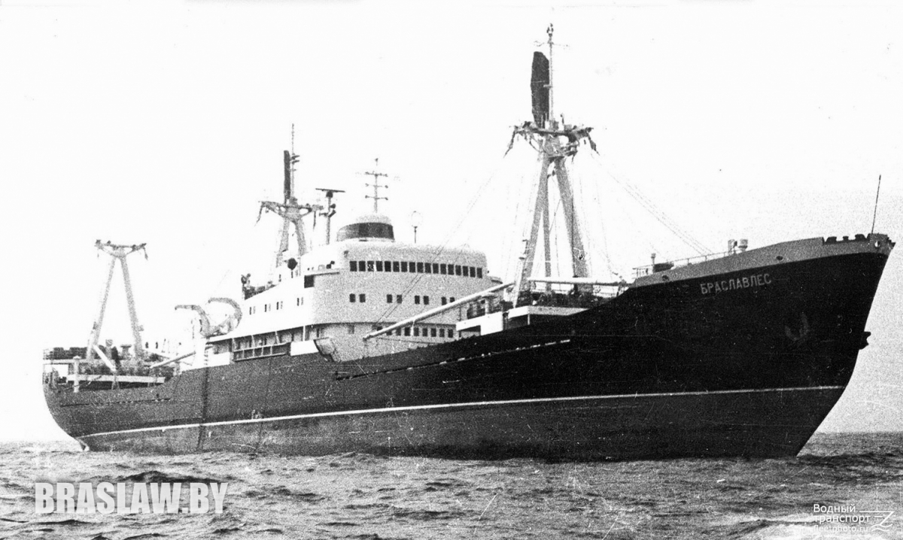
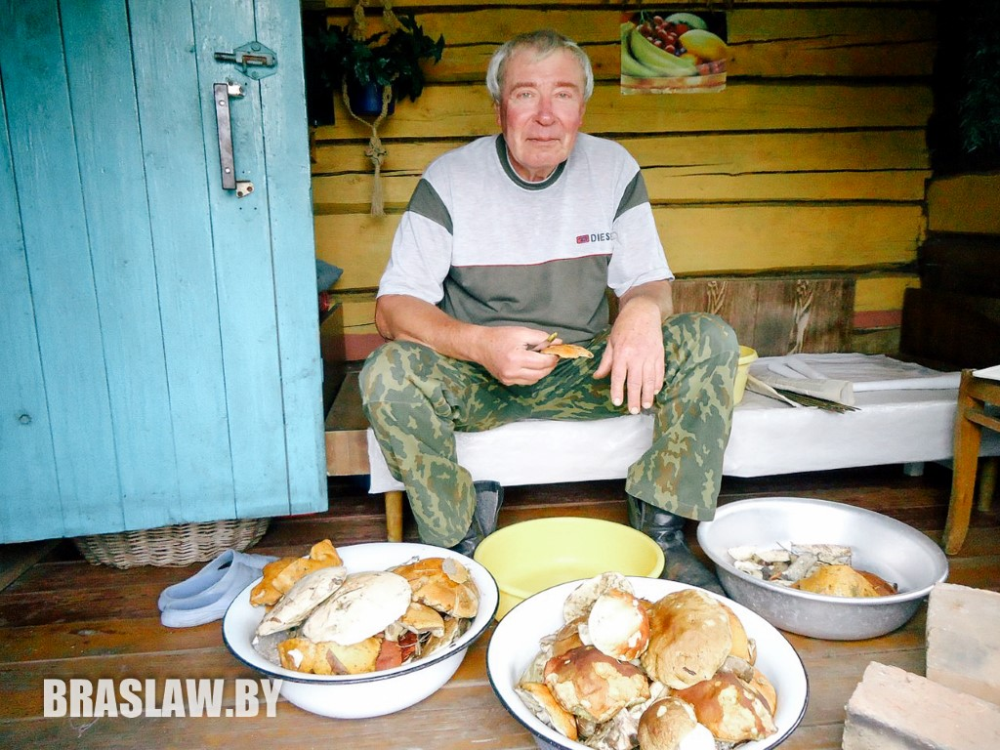
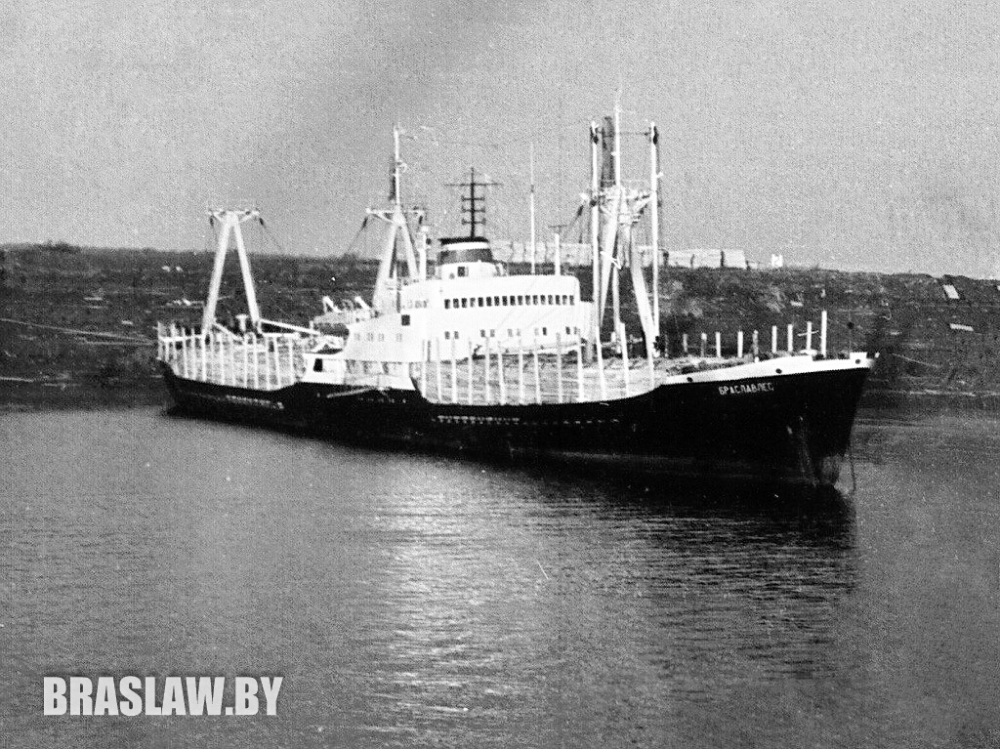
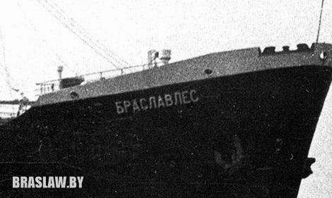

Цікавая гісторыя карабля-земляка «Браславлес»

Некалькі гадоў таму аўтар знайшоў і распавёў на гэтым сайце, што на Ціхім акіяне ў 60-70 гг. плаваў траўлер «Браслаў». У каментарах хтосьці згадаў, што быў яшчэ і карабель «Браслаўлес». Мы вырашылі даведацца пра гэта судна больш.
«Браслаўлес» быў пабудаваны на суднаверфі Stocznia Gda?ska (Гданьск, Польшча) у снежні 1962 г . Гэта быў цеплаход лядовага класа, прызначаны для перавозкі лесу і збожжа з магчымасцю плавання ў нескладаных лядовых умовах. Праект меў нумар B-45, традыцыйна па імені першага карабля гэтай серыі называўся “Беломорсклес”. Гэтая серыя была адной з самых вялікіх - яна будавалася 7 гадоў, за якія здадзена 67 першакласных лесавозаў. Караблі гэтай серыі па месцы пабудовы маракі называлі "палякамі", паважалі за камфорт і надзейнасць.
Гэта было не маленькае судна, яго даўжыня складала больш за 120 м. Ён мог узяць на борт амаль 6 000 т грузу, вазіў лес, піламатэрыялы, пясок, зборныя грузы ў многія парты свету - ад Кубы да Ліберыі. Усяго «Браслаўлес» праплаваў 23 гады - з 1963 па 1986 гг.

На жаль, інфармацыі пра "Браслаўлес" у літаратуры і Інтэрнэце мала, хаця, напэўна таму, што экіпаж сумленна выконваў свой абавязак - мы не знайшлі фактаў пра гучныя аварыі на «Браслаўлес», іншыя надзвычайныя падзеі. Дадалося і тое, што па морах ў 80- гадах плавала больш за тысячу трохсот савецкіх марскіх караблёў.
Першым капітанам цеплахода «Браславлес» быў прызначаны вопытны марак, стары "марскі воўк" Іван Панамароў. Яго працоўныя заслугі былі ацэненыя вышэйшай урадавай узнагародай - званнем Герой Сацыялістычнай Працы
Нам пашанцавала знайсці матроса з "Браслаўлес" - Аляксандра Новікава, які зараз ужо пенсіянер і жыве ў Архангельской вобласці. Ён ласкава адгукнуўся на наш запыт і вельмі цікава напісаў пра сваё плаванне на гэтым судне, яно было поўнае прыгод і падзей.

Вось яго радкі: Я ходил на "Браславлесе" с июля 70-го по сентябрь 71-го годов пекарем. По молодости было обидно работать на камбузе, вместо машинного отделения. С годами понял, что это был подарок судьбы. После этого опыта от яичницы до торта приготовить- нет проблем. Без лишней скромности скажу, что мало какая женщина потягается со мной на кухне, хотя всю жизнь проработал с железом.
Вспоминаю - по деревянному причалу 2-го лесозавода в Архангельске идет мальчик 18 лет. На голове - мичманка, на плечах- голландка, на бедрах- десантная баржа, в левой руке - школьный портфельчик с чистыми тельняшкой, трусами и носками, а в правой ПАСПОРТ моряка заграничного плавания и направление отдела кадров Севморпароходства на т/х "Браславлес". В глазах, при виде огромного (по тем временам) теплохода, страх непонимания и ожидание чего- то необычного.
Работали на линиях Архангельск - Европа (пилолес), Архангельск- Дудинка (генеральные грузы для Норильска, из Игарки лес в Европу. Новый год встретили в Гулле где простояли под разгрузкой полтора месяца вместо 6-ти дней. Попали под серию забастовок докеров, потом Рождественские праздники, Новый год. Потом Вентспилс. Из- за отсутствия грузов 10 дней отстоя на рейде пока не подвернулся груз (кварцевый песок) из Антверпена в Италию (Бари, Васто). После разгрузки получили команду следовать к Гибралтару без определенной цели. К счастью нас зафрахтовала француз кая компания для перевозки красного дерева из Африки( Абиджан, Монровия) в Европу( Франция, Испания, Италия). Потом ремонт в Марселе. Бревнами (а вес каждого доходил до 24 тонн и диаметр до 2-х метров) при рейдовой погрузке в океане негры нам помяли и погнули все что подвернулось (борта, трюмные комингсы, грузовые стрелы).Далее Марокко (Касабланка)- Швеция (Норчепинг), что везли- не помню.Рейс был не запланированный и экипаж уже "потряхивало" от усталости и нервного переутомления. В Архангельск пришли 30-го мая загоревшие до черноты, а по берега Северной Двины стоят голые деревья и температура +5°. Потом дальняя Арктика до Тикси. На Диксоне был сформирован караван из 12-ти судов под проводкой ледокола "Ленин". После Тикси Игарка за пилолесом и во Францию с заходом в Мурманск для бункеровки (пополнения запасов топлива, воды, продовольствия). В Мурманске я списался с судна в отпуск после 15-ти месяцев жизни в железной коробке. К тому времени нас, могикан, осталось 5-ть человек из 47 членов экипажа.
По вопросу о названии. Просто шла серия судов, "заточенных" под перевозку пиломатериалов и называли их по лесодобывающим пунктам. Немецкий проект 1939 года. После войны документацию передали полякам на верфь "Гданьска сточна ремонтова" им. В.И. Ленина. Первые суда (включая "Браславлес") шли с немецкими дизелями "Бурмейстер ог Вайн". Мотористы горя не знали. Потом стали ставить Брянский аналог. Машинная команда на вахтах тряпок из рук не выпускала, устраняя протечки масел и топлива.
После "Браслава" я еще 5 лет работал в СМП (Северное морское пароходство) на разных судах. Закончил свою флотскую "карьеру" старшим электриком на т/х "Капитан Бурмакин". В те времена это были новейшие океанские суда полуавтоматы. Достаточно сказать, что вахтенный штурман, нажатием кнопки мог управлять главным дизелем”.

Век карабля не бясконцы - метал іржавее, старэнне аслабляе канструкцыю, у 1986 годзе карабель спісалі. Сумна толькі тое, што разрэзалі на металалом у далёкім Пакістане, а не на Радзіме ...
Мы пацікавіліся, а ці ёсць яшчэ караблі, названыя ў гонар беларускіх гарадоў? Аказалася быў авіянясучы крэйсер "Мінск". Пасля спісання карабель павінны былі пусціць на металалом, але прадалі ў Кітай, дзе з яго зрабілі парк Minsk World.
Носьбітам імя беларускай сталіцы стаў і дэсантны карабель, які да гэтага часу знаходзіцца складзе Балтыйскага флоту Расіі.
Таксама ў назвах караблёў можна было сустрэць усе сучасныя абласныя цэнтры Беларусі і некаторыя раённыя.
Імя “Віцебск” мелі два рыбалавецкія караблі. Першы плаваў з 1956 па 1983 гг. другі – з 1985 г., зараз недзе чакае продажу на разбоку. Портам іх прыпіскі быў Мурманск.
Два судны «Гродна» і «Маладзечна» доўгі час служылі ў Чарнаморскім марскім параходства. У 1969 і 1970 гадах было пабудавана два сухагруза «Наваполацк» і «Навагрудак». Абодва судна былі накіраваныя ў Балтыйскае марское параходства.
Многія з гэтых караблёў ужо пайшлі на металалом, але свой след у гісторыі флоту ўсё ж пакінулі.

Віктар Бунта.
Фота знойдзена аўтарам на прасторы сеціва.
P.S. Аказалася, што Аляксандр Новікаў - марак з «Браславлеса» - пісаў пранікнёныя вершы, адзін з якіх мы вам прапануем прачытаць.
В МОРЕ
В море чаще дом родимый снится
И пускай безмолвие вокруг.
Кажется, в железный борт стучится,
Не волна, а запоздалый друг.
Милый дом, с налаженностью быта,
Где близки и завтра, и вчера.
А вот здесь, в безмолвии открытом,
Третьи сутки стонут леера!
Третьи сутки дикая болтанка,
И еще не весть на сколько дней.
Кувыркает, словно ваньку-встаньку,
Океанский транспорт на волне.
А ведь рядом, миль за тридцать с лишком,
Так уютно спят материки.
И дотошным лирикам мальчишкам
Грезятся чужие маяки.
Милые мальчишки, в мыслях чистых
Помните, пожалуйста, одно.
Море не прогулка для туристов,
Море не такое, как в кино.
Море - бесконечные скитанья
Вдалеке от милых и родных.
Море - это жизнь по расписанию,
День за днем, без всяких выходных.
Потому мучительно не спится,
Если в борт колотится волна.
Если судно в долгий дрейф ложится,
А вокруг бушует кутерьма.
И желудок стягивает к горлу,
И есть не хочется, не пить.
Надо быть наверно очень твердым,
Чтобы море вдруг не разлюбить.
1972 г.